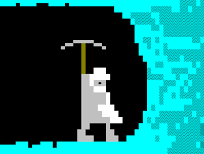
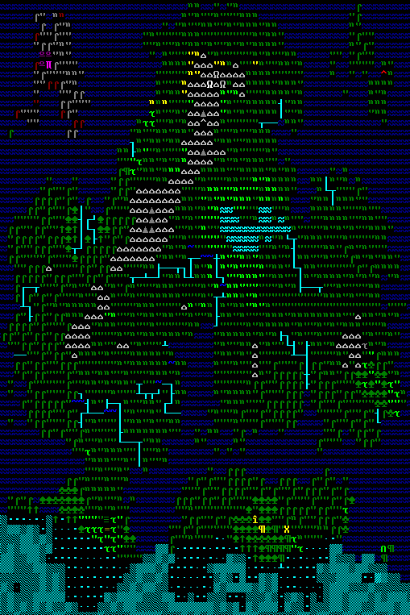
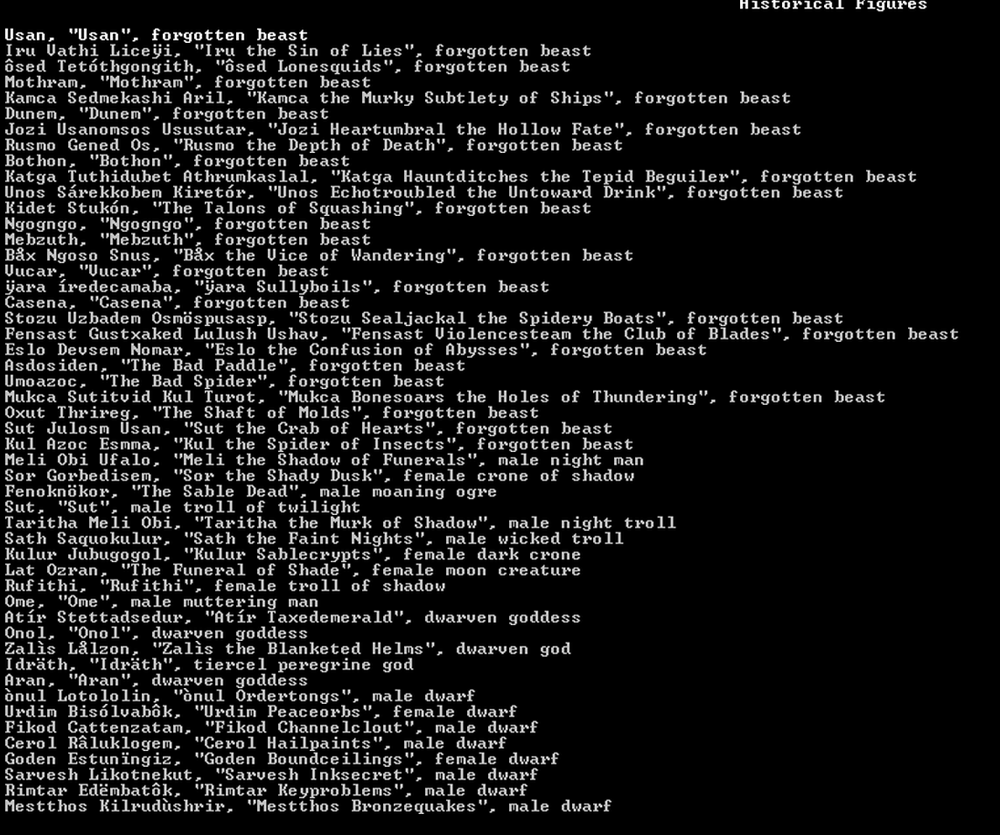

Tutoriels Dwarf Fortress

Bienvenue sur le site

Les tutos de ce site ont pour but de vous aider à progresser dans ce jeu complexe.
Dwarf Fortress est un jeu complexe qui est très dur à comprendre pour quelqu'un qui débute dans le jeu.
Les articles de ce site vous guideront pas à pas pour vous permettre de survivre aux évènements du jeu.
 Pour une meilleure compréhension du jeu, je vous conseille de lire la présentation du jeu.
Pour une meilleure compréhension du jeu, je vous conseille de lire la présentation du jeu.
Cette présentation sert de première approche avec le jeu. Il parle très rapidement du jeu.

Création du monde

La création du monde n'est pas très dure à comprendre mais néanmoins nous avons trouvé utile d'en parler dans un petit tuto qui pourrait vous être utile.
Tutoriel mode Forteresse
Les tutoriels du mode forteresse sont censés vous aider à vous y retrouver avec une citadelle remplie de nains.
Tutoriel mode Aventure
 Les tutoriels du mode aventure sont censés vous aider à vous y retrouver dans vos aventure dans votre monde et survivre aux attaques de gobelin,
de bête sauvage, de bandits et de bogeyman.
Les tutoriels du mode aventure sont censés vous aider à vous y retrouver dans vos aventure dans votre monde et survivre aux attaques de gobelin,
de bête sauvage, de bandits et de bogeyman.
Tutoriel mode légende

Même si c'est le mode qui pourrait vous sembler le moins intéressant, nous allons quand même vous expliquer ce qu'on peut retrouver dans tout ce fatras d'histoire du mode légende.
Bloodlines et récits
 Dwarf Fortress est un jeu qui stimule l'imagination. Il existe des récits qui d'aventures arrivée à des nains.
Peut-être même cela vous donnera l'envie de raconter vos aventures.
Dwarf Fortress est un jeu qui stimule l'imagination. Il existe des récits qui d'aventures arrivée à des nains.
Peut-être même cela vous donnera l'envie de raconter vos aventures.